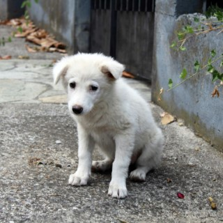

Why
造成原因
農委會公布109年全國遊蕩犬隻數量調查推估結果，全國推估遊蕩犬數為155,869隻，與上期(107)年調查結果相較，遊蕩犬數量微幅增加6.19％(9,096隻)，截至目前數量還是在持續增加，這些流浪犬的來源主要可以分為三項：
野狗
Free-roaming dogs

流浪犬自然繁殖出的犬隻。
如沒有控制，將一代一代的傳下去，沒有節制的繁殖。
放養狗
Free-ranging dogs
有人餵食甚至飼養的犬，但是放任狗狗在路上隨意行動的，主要出現在非都市地區。
由於沒有絕育，狗的繁殖速度驚人，經常造成棄養的問題。除此之外，隨意地放養也會導致攻擊路人、野生動物的狀況。尤其沒有籠子或鐵鍊的放養狗。
棄狗
Abandoned dog

被飼主或是繁殖場丟棄
由於大多數狗都沒有接種疫苗，這些狗也會感染和傳播疾病，造成永久性傷害，甚至死亡。此外，很少有狗能被抓捕、絕育，因此數量逐年增長，讓越來越多流浪狗面臨這種痛苦。